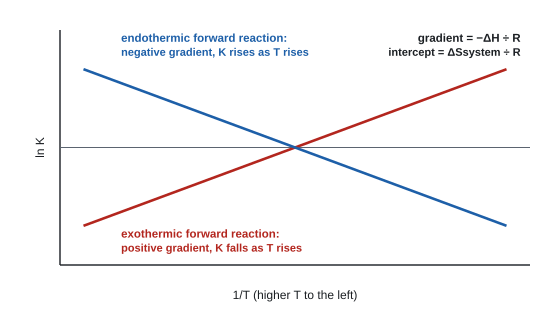

Chemical equilibria
At AS you predicted which way an equilibrium moves. Now you put numbers on it. The equilibrium constants Kc and Kp measure exactly where an equilibrium lies, you can calculate them from experimental data, and they explain why changing the temperature behaves so differently from changing concentration, pressure or adding a catalyst.
Spec13.1Writing Kc for homogeneous and heterogeneous equilibria
Deduce an expression for Kc, in terms of equilibrium concentrations, for homogeneous and heterogeneous systems.
The rule
For aA + bB ⇌ cC + dD (all in solution or all gases):
Kc = [C]c[D]d ÷ ([A]a[B]b)
- Products on top, reactants underneath.
- Each concentration is raised to the power of its coefficient in the balanced equation.
- Square brackets = equilibrium concentration in mol dm⁻³.
- Homogeneous: everything in the same phase. Heterogeneous: more than one phase.
- In a heterogeneous system, leave out pure solids (and pure liquids, such as water used as the solvent). Their "concentration" is fixed, so it's already part of K.
Examples
| Equilibrium | Kc |
|---|---|
| H₂(g) + I₂(g) ⇌ 2HI(g) | [HI]² ÷ ([H₂][I₂]) |
| N₂(g) + 3H₂(g) ⇌ 2NH₃(g) | [NH₃]² ÷ ([N₂][H₂]³) |
| CH₃COOH(l) + C₂H₅OH(l) ⇌ CH₃COOC₂H₅(l) + H₂O(l) | [CH₃COOC₂H₅][H₂O] ÷ ([CH₃COOH][C₂H₅OH]) |
| Fe²⁺(aq) + Ag⁺(aq) ⇌ Fe³⁺(aq) + Ag(s) | [Fe³⁺] ÷ ([Fe²⁺][Ag⁺]) (solid silver left out) |
| CaCO₃(s) ⇌ CaO(s) + CO₂(g) | [CO₂] |
In the ester equilibrium water is included: it's a product mixed in with the other liquids, not a solvent present in huge excess.
Units of Kc
Substitute mol dm⁻³ for every concentration and cancel.
- [HI]² ÷ ([H₂][I₂]): (mol dm⁻³)² ÷ (mol dm⁻³)² → no units.
- [NH₃]² ÷ ([N₂][H₂]³): (mol dm⁻³)² ÷ (mol dm⁻³)⁴ = (mol dm⁻³)⁻² = mol⁻² dm⁶ (dm⁶ mol⁻²).
- [CO₂]: mol dm⁻³.
Write the expression: \( K_c = \dfrac{[\mathrm{NH_3}]^2}{[\mathrm{N_2}][\mathrm{H_2}]^3} \).
Substitute the unit: \( \dfrac{(\mathrm{mol\,dm^{-3}})^2}{(\mathrm{mol\,dm^{-3}})(\mathrm{mol\,dm^{-3}})^3} = \dfrac{(\mathrm{mol\,dm^{-3}})^2}{(\mathrm{mol\,dm^{-3}})^4} \).
Cancel: \( (\mathrm{mol\,dm^{-3}})^{-2} = \mathrm{mol^{-2}\,dm^{6}} \).
A quick check: there are 2 molecules on top and 4 underneath, so the unit is (mol dm−3)2−4.
- "Kc = [NO]²[Cl₂] ÷ [NOCl]²" (WCH14 Jun 2025 Q14). DO NOT AWARD round brackets, "p", or the 2 written inside the bracket.
- Heterogeneous: "Kc = [CO₂]" for a solid decomposing (WCH14 Oct 2025 Q14).
- Doubling every coefficient squares K (WCH14 Oct 2020 Q7).
Often asked as: write Kc (often as the first mark of a calculation); MCQ on Kc for a heterogeneous system; how K changes when the equation is reversed or multiplied.
Examined in past papers even though the spec doesn't list it.
- Change the equation, change K: reverse it → 1/K; double it → K²; halve it → √K (WCH14 Jan 2025 Q5: halving the coefficients turned 4 × 10²⁴ into 2.0 × 10¹²).
Including a solid. Writing the equation instead of the expression. Putting reactants on top.
Spec13.2Writing Kp in terms of partial pressures
Deduce an expression for Kp for homogeneous and heterogeneous systems, in terms of equilibrium partial pressures in atm.
Partial pressure
- In a mixture of gases, the partial pressure of a gas is the pressure it would exert if it filled the container on its own.
- Mole fraction: xA = moles of A ÷ total moles of gas.
- Partial pressure: pA = xA × total pressure.
- The partial pressures add up to the total pressure, and the mole fractions add up to 1.
Kp expressions
Like Kc, but with partial pressures (written pNH₃ or p(NH₃)) and only gases:
| Equilibrium | Kp | Units |
|---|---|---|
| N₂(g) + 3H₂(g) ⇌ 2NH₃(g) | p(NH₃)² ÷ (p(N₂) × p(H₂)³) | atm⁻² |
| ½N₂(g) + 1½H₂(g) ⇌ NH₃(g) | p(NH₃) ÷ (p(N₂)½ × p(H₂)1½) | atm⁻¹ |
| N₂O₄(g) ⇌ 2NO₂(g) | p(NO₂)² ÷ p(N₂O₄) | atm |
| 2SO₂(g) + O₂(g) ⇌ 2SO₃(g) | p(SO₃)² ÷ (p(SO₂)² × p(O₂)) | atm⁻¹ |
| CaCO₃(s) ⇌ CaO(s) + CO₂(g) | p(CO₂) | atm |
| C(s) + H₂O(g) ⇌ CO(g) + H₂(g) | p(CO) × p(H₂) ÷ p(H₂O) | atm |
- Solids and liquids are left out; gaseous products still count.
- Units come from cancelling atm, exactly as for Kc.
- "Kp = p(NH₃) ÷ (p(N₂)½ × p(H₂)1½)" (WCH14 Jan 2026 Q15). Round brackets, "pp", "P" or "p(NH₃)" are all allowed.
- DO NOT AWARD square brackets in Kp (every mark scheme that asks says so), or an expression with no p at all.
Often asked as: write Kp (part of nearly every Kp calculation); give its units.
Examined in past papers even though the spec doesn't list it.
- Fractional coefficients give fractional powers and unusual units (atm⁻¹ for the ½N₂ + 1½H₂ equation) (WCH14 Jan 2026 Q15).
Square brackets in Kp: examiner reports call this "disappointingly" common. Square brackets mean concentration.
Including a solid such as CaCO₃ in Kp.
Spec13.3Calculating Kc and Kp, with units
Calculate values of Kc and Kp, with units where needed, for homogeneous and heterogeneous reactions from experimental data.
Method (use an ICE table)
- Write the balanced equation and the K expression.
- Initial moles; Change (use the mole ratio); Equilibrium moles.
- For Kc: divide each equilibrium amount by the volume (dm³) to get concentrations.
For Kp: find the total equilibrium moles of gas → mole fractions → partial pressures. - Substitute, calculate, and work out the units.
Worked example 1: Kc with no units (volume cancels)
0.50 mol CH₃COOH and 1.00 mol C₂H₅OH reach equilibrium; 0.423 mol of ethyl ethanoate has formed. Find Kc.
CH₃COOH + C₂H₅OH ⇌ CH₃COOC₂H₅ + H₂O
Initial: 0.50, 1.00, 0, 0
Change: −0.423, −0.423, +0.423, +0.423
Equilibrium: 0.077, 0.577, 0.423, 0.423
Kc = (0.423/V × 0.423/V) ÷ (0.077/V × 0.577/V): the V's cancel, so moles can be used.
Kc = 0.1789 ÷ 0.04443 = 4.0 (no units)
Worked example 2: Kc with units
0.200 mol PCl₅ is heated in a 2.00 dm³ flask: PCl₅(g) ⇌ PCl₃(g) + Cl₂(g). At equilibrium 0.120 mol PCl₅ remains.
Equilibrium moles: PCl₅ 0.120; PCl₃ 0.080; Cl₂ 0.080
Concentrations: [PCl₅] = 0.0600, [PCl₃] = 0.0400, [Cl₂] = 0.0400 mol dm⁻³
Kc = (0.0400 × 0.0400) ÷ 0.0600 = 0.0267 mol dm⁻³
Worked example 3: Kp for the Haber process
1.00 mol N₂ and 3.00 mol H₂ reach equilibrium at a total pressure of 200 atm; 0.40 mol NH₃ has formed.
N₂ + 3H₂ ⇌ 2NH₃
Equilibrium moles: N₂ 1.00 − 0.20 = 0.80; H₂ 3.00 − 0.60 = 2.40; NH₃ 0.40; total 3.60
Mole fractions: N₂ 0.222; H₂ 0.667; NH₃ 0.111
Partial pressures (× 200): N₂ 44.4 atm; H₂ 133.3 atm; NH₃ 22.2 atm
Kp = 22.2² ÷ (44.4 × 133.3³) = 4.69 × 10⁻⁶ atm⁻²
Worked example 4: Kp for N₂O₄ ⇌ 2NO₂
1.00 mol N₂O₄ is 20% dissociated at 298 K and a total pressure of 1.00 atm.
Equilibrium moles: N₂O₄ 0.80; NO₂ 0.40; total 1.20
p(N₂O₄) = (0.80/1.20) × 1.00 = 0.667 atm; p(NO₂) = (0.40/1.20) × 1.00 = 0.333 atm
Kp = 0.333² ÷ 0.667 = 0.167 atm
Worked example 5: equilibrium amounts from Kc (no quadratic)
H₂(g) + I₂(g) ⇌ 2HI(g), Kc = 49 at a certain temperature. Start with 1.00 mol H₂ and 1.00 mol I₂. How much HI forms?
Equilibrium: H₂ (1.00 − x), I₂ (1.00 − x), HI 2x. Kc has no units, so volumes cancel.
(2x)² ÷ (1.00 − x)² = 49 → take the square root: 2x ÷ (1.00 − x) = 7
2x = 7 − 7x → x = 0.778 mol, so HI = 1.56 mol; H₂ = I₂ = 0.222 mol.
0.500 mol of H2 and 0.500 mol of I2 are heated in a sealed 2.00 dm3 flask. At equilibrium the flask contains 0.786 mol of HI. Find Kc.
HI formed = 0.786 mol. The equation says 2 HI form for every 1 H2 and 1 I2 used, so 0.393 mol of each reactant reacted.
| H2 | I2 | HI | |
|---|---|---|---|
| Initial / mol | 0.500 | 0.500 | 0 |
| Change / mol | −0.393 | −0.393 | +0.786 |
| Equilibrium / mol | 0.107 | 0.107 | 0.786 |
| Concentration / mol dm−3 | 0.0535 | 0.0535 | 0.393 |
\( K_c = \dfrac{[\mathrm{HI}]^2}{[\mathrm{H_2}][\mathrm{I_2}]} = \dfrac{0.393^2}{0.0535 \times 0.0535} = 54.0 \), with no units.
Because the units cancel, the volumes cancel too: putting the equilibrium moles straight in gives the same answer. That shortcut only works when Kc has no units.
2.00 mol of SO2 and 1.20 mol of O2 are mixed in a 5.00 dm3 vessel with a catalyst. At equilibrium there are 1.60 mol of SO3. Find Kc.
1.60 mol of SO3 formed, so 1.60 mol of SO2 and 0.800 mol of O2 reacted (ratio 2 : 1 : 2).
Equilibrium moles: SO2 2.00 − 1.60 = 0.400; O2 1.20 − 0.800 = 0.400; SO3 1.60.
Divide by 5.00 dm3: [SO2] = 0.0800, [O2] = 0.0800, [SO3] = 0.320 mol dm−3.
\( K_c = \dfrac{[\mathrm{SO_3}]^2}{[\mathrm{SO_2}]^2[\mathrm{O_2}]} = \dfrac{0.320^2}{0.0800^2 \times 0.0800} = 200\ \mathrm{dm^3\,mol^{-1}} \)
Here the volume does not cancel. Forgetting to divide by 5.00 would give 40.0, a wrong answer.
1.00 mol of N2O4 is allowed to reach equilibrium. 20.0% of it dissociates, and the total pressure is 1.00 atm. Find Kp.
N2O4 reacted = 0.200 mol, so NO2 formed = 0.400 mol. At equilibrium: 0.800 mol N2O4 and 0.400 mol NO2, 1.200 mol in total.
Mole fractions: \( x_{\mathrm{N_2O_4}} = 0.800/1.200 = \tfrac{2}{3} \); \( x_{\mathrm{NO_2}} = 0.400/1.200 = \tfrac{1}{3} \).
Partial pressures at 1.00 atm: \( p_{\mathrm{N_2O_4}} = \tfrac{2}{3} = 0.667 \) atm, \( p_{\mathrm{NO_2}} = \tfrac{1}{3} = 0.333 \) atm.
\( K_p = \dfrac{p_{\mathrm{NO_2}}^2}{p_{\mathrm{N_2O_4}}} = \dfrac{(1/3)^2}{2/3} = 0.167\ \mathrm{atm} \)
With the rounded values 0.333 and 0.667 you would get 0.166: another reason to keep full figures until the end.
2.00 mol of N2 and 6.00 mol of H2 reach equilibrium at a total pressure of 100 atm. The equilibrium mixture contains 1.00 mol of NH3. Find Kp.
1.00 mol of NH3 formed, so 0.500 mol of N2 and 1.50 mol of H2 reacted. At equilibrium: N2 1.50, H2 4.50, NH3 1.00; total 7.00 mol.
Partial pressures: \( p_{\mathrm{N_2}} = \tfrac{1.50}{7.00} \times 100 = 21.4 \) atm; \( p_{\mathrm{H_2}} = \tfrac{4.50}{7.00} \times 100 = 64.3 \) atm; \( p_{\mathrm{NH_3}} = \tfrac{1.00}{7.00} \times 100 = 14.3 \) atm. Check: they add up to 100 atm.
\( K_p = \dfrac{p_{\mathrm{NH_3}}^2}{p_{\mathrm{N_2}}\,p_{\mathrm{H_2}}^3} = \dfrac{14.3^2}{21.4 \times 64.3^3} = 3.58 \times 10^{-5}\ \mathrm{atm^{-2}} \)
Keep the unrounded partial pressures in your calculator; rounding to three figures first can shift the last digit.
The mixture started with 0.200 mol of ethanoic acid and 0.200 mol of ethanol. Each 25.0 cm3 portion of the diluted mixture needed 21.40 cm3 of 0.500 mol dm−3 NaOH. The catalyst alone contains 0.0400 mol of H+.
NaOH used per portion = 0.02140 dm3 × 0.500 mol dm−3 = 0.01070 mol, so the 25.0 cm3 portion held 0.01070 mol of acid.
The whole 250 cm3 held ten times as much: 0.1070 mol of acid.
Ethanoic acid at equilibrium = 0.1070 − 0.0400 = 0.0670 mol.
Ethanoic acid that reacted = 0.200 − 0.0670 = 0.133 mol, so 0.133 mol of ethanol reacted, and 0.133 mol each of ester and water formed. Ethanol left = 0.200 − 0.133 = 0.0670 mol.
\( K_c = \dfrac{0.133 \times 0.133}{0.0670 \times 0.0670} = 3.94 \), with no units, so the total volume cancels.
This ignores the water that came in with the dilute catalyst. Including it makes [H2O] slightly bigger and Kc slightly bigger: a known limitation of the method.
- Typical mark pattern: equilibrium moles (1); mole fractions (1); partial pressures (1); substitution into Kp (1); value with units (1).
- Units: atm⁻¹, atm⁻², mol dm⁻³, dm³ mol⁻¹; "no units" when the powers cancel (WCH14 Oct 2022 Q18). SF: 2 or 3 usually.
- Ester equilibria: "a statement that the volumes cancel" earns the last mark (WCH14 Jan 2022 Q21, Jan 2024 Q19).
Often asked as: Kc from moles and a volume; Kp from moles → mole fractions → partial pressures; Kp from a percentage composition; show that a given mixture is not at equilibrium.
Examined in past papers even though the spec doesn't list it.
- Converting Kp ↔ Kc. For each gas, p = (n/V)RT = cRT, so Kp = Kc(RT)Δn, where Δn = moles of gas products − moles of gas reactants. With p in atm and c in mol dm⁻³, use R = 0.0821 dm³ atm K⁻¹ mol⁻¹ and T in K (WCH14 Jan 2025 Q5, Oct 2025 Q14). For N₂O₄ ⇌ 2NO₂ (Δn = +1): Kc = Kp ÷ RT = 0.167 ÷ (0.0821 × 298) = 6.8 × 10⁻³ mol dm⁻³. For CaCO₃ ⇌ CaO + CO₂: Kc = [CO₂] = p(CO₂) ÷ RT.
- pV = nRT in SI units (p in Pa, V in m³, R = 8.31 J K⁻¹ mol⁻¹): e.g. 15 dm³ = 0.015 m³ (WCH14 Oct 2023 Q15).
- The reaction quotient, Q: same expression as K but with the concentrations or pressures you actually have. If Q = K the mixture is at equilibrium; if not, it isn't. Example: for N₂O₄ ⇌ 2NO₂ (Kp = 0.167 atm), a mixture with p(NO₂) = p(N₂O₄) = 0.50 atm has Qp = 0.50² ÷ 0.50 = 0.50 atm > Kp, so it is not at equilibrium and will shift left (WCH14 Oct 2025 Q14: Qp = 4.5 atm⁻¹ against Kp = 35.2 atm⁻¹).
- Use the total moles at equilibrium, not at the start, for mole fractions (WCH14 Oct 2021 Q19 examiner report).
Using initial moles in K. Using Mr(O) = 16 for O₂ (it's 32; about a third of candidates did this in one paper). Not dividing by the volume when Kc has units.
Rounding in the middle of the calculation; 4 or more SF; missing units.
Spec13.4How temperature, pressure and a catalyst affect equilibrium composition
Understand how, if at all, changing the temperature or pressure, or adding a catalyst, affects the equilibrium composition of a homogeneous or heterogeneous system.
Summary
| Change | Effect on position | Effect on K |
|---|---|---|
| Increase temperature | shifts in the endothermic direction | changes (13.6) |
| Decrease temperature | shifts in the exothermic direction | changes |
| Increase pressure | shifts towards the side with fewer moles of gas | no change |
| Decrease pressure | shifts towards more moles of gas | no change |
| Add a catalyst | no change: forward and backward rates go up equally; equilibrium is just reached sooner | no change |
| Add more of a reactant | shifts to use it up (towards products) | no change |
- In a heterogeneous system, count only gas moles when you think about pressure. CaCO₃(s) ⇌ CaO(s) + CO₂(g): 0 → 1 mol gas, so high pressure shifts it left. Adding more solid CaCO₃ doesn't shift the position.
- Equal moles of gas on both sides (H₂ + I₂ ⇌ 2HI): pressure doesn't shift the position.
Observations with coloured gases
- N₂O₄(g, colourless) ⇌ 2NO₂(g, brown), forward endothermic.
- Compress it: the colour darkens at once (NO₂ is squeezed into a smaller volume), then fades a little as the position shifts left (fewer moles of gas). It stays darker than at the start.
- Heat it: browner, because the endothermic forward reaction is favoured.
- For H₂ + I₂ ⇌ 2HI, compressing makes the purple colour more intense but doesn't shift the position.
Industrial compromise: the Haber process
N₂(g) + 3H₂(g) ⇌ 2NH₃(g), ΔH = −92 kJ mol⁻¹
- Temperature about 450 °C: a low temperature would give a higher yield (exothermic forward), but the rate would be too slow. 450 °C gives a reasonable yield at a fast enough rate.
- Pressure about 200 atm: high pressure favours NH₃ (4 → 2 mol gas) and increases the rate, but very high pressures cost too much to build and run safely.
- Iron catalyst: faster, no effect on yield.
- Only about 15% conversion per pass: unreacted gases are recycled, so the overall conversion is much higher.
- "increase in temperature would decrease yield / shift the equilibrium to the left, because the reverse reaction is endothermic"; "increase in pressure would increase the yield because there are fewer moles (of gas) on the right-hand side"; "a catalyst has no effect on the yield because the rates of the forward and backward reactions are increased (equally)" (WCH14 Jan 2026 Q15). "Molecules" for "moles" is allowed.
- "when the pressure is increased, equilibrium moves to the RHS and yield increases as fewer gas molecules on the RHS; Kp remains constant"; "temperature increase: equilibrium moves to LHS as the forward reaction is exothermic; Kp decreases" (WCH14 Jun 2021 Q20).
- Large K: "the equilibrium is (already) far to the right, so increased pressure would give only a small increase in yield" (WCH14 Oct 2025 Q14).
Often asked as: effect of each change on yield and on K, with reasons; colour change on compressing; justify compromise conditions.
Examined in past papers even though the spec doesn't list it.
- Compressing an equilibrium with equal gas moles on both sides: the position doesn't move, but the colour gets more intense because the same particles are in a smaller volume (WCH14 Jan 2025 Q10, the hardest MCQ on that paper).
- Recycling unreacted gases to get overall conversion above the equilibrium yield (WCH14 Oct 2021 Q19, Jan 2022 Q22).
Saying "the equilibrium shifts left" without saying what happens to the yield.
Mixing up exothermic and endothermic directions.
Using Le Chatelier when the question says "in terms of Kp": then you must argue with Q and K (13.5).
Spec13.5K doesn't change with concentration, pressure or a catalyst
Understand that the value of the equilibrium constant is not affected by changes in concentration or pressure, or by adding a catalyst.
Only temperature changes K
- Concentration: adding a reactant makes the quotient Q smaller than K. The system reacts forwards (making more products, using reactants) until Q = K again. The position moves; K doesn't.
- Pressure: changing the total pressure changes every partial pressure by the same factor. If the gas moles differ on each side, Q changes; the system shifts until Q = Kp again.
- Catalyst: speeds up forward and reverse reactions by the same factor. Equilibrium arrives sooner with the same composition, so K is unchanged.
Worked example: pressure explained with Kp
N₂ + 3H₂ ⇌ 2NH₃: double the total pressure. Every partial pressure doubles at once.
Qp = (2p(NH₃))² ÷ ((2p(N₂)) × (2p(H₂))³) = (4 ÷ 16) × Kp = Kp ÷ 4
Qp is now smaller than Kp, so the system makes more NH₃ (top line up, bottom line down) until Qp = Kp again. Position shifts right; Kp unchanged.
N₂O₄ ⇌ 2NO₂: double the pressure.
Qp = (2p(NO₂))² ÷ (2p(N₂O₄)) = 2 × Kp
Qp is too big, so NO₂ turns back into N₂O₄ until Qp = Kp. Position shifts left.
Write each partial pressure as mole fraction × total pressure: \( K_p = \dfrac{(x_{\mathrm{NH_3}}P)^2}{(x_{\mathrm{N_2}}P)(x_{\mathrm{H_2}}P)^3} \).
Collect the P terms: \( K_p = \dfrac{x_{\mathrm{NH_3}}^2}{x_{\mathrm{N_2}}\,x_{\mathrm{H_2}}^3} \times \dfrac{1}{P^2} \).
Double P and the factor \( 1/P^2 \) falls to a quarter. Straight after the change the right-hand side is smaller than Kp, so the mixture is not at equilibrium.
To restore Kp, the mole-fraction part must grow fourfold: more NH3 forms and N2 and H2 are used up. The position shifts right, towards fewer gas molecules, and Kp ends where it started.
If both sides have the same number of gas molecules, the P terms cancel completely and pressure has no effect on the position at all.
- "the value of Kp would not change due to increased pressure or the presence of a catalyst, (but) temperature changes Kp" (WCH14 Jan 2026 Q15).
- Increased pressure "in terms of Kp": "Kp remains the same"; "the quotient / Qp / apparent value of Kp decreases (when pressure increases)"; "so equilibrium shifts to the right-hand side (to return to the value of Kp)" (WCH14 Oct 2020 Q19).
Often asked as: state and explain what happens to K; explain a pressure change using Kp.
Examined in past papers even though the spec doesn't list it.
- The reaction quotient Q argument is the only route credited when a question says "in terms of Kp" (WCH14 Oct 2020 Q19). The same idea shows whether a mixture is at equilibrium (WCH14 Oct 2025 Q14).
Saying K increases because "more product is made at higher pressure". K is fixed; the position moves to keep it fixed.
Leaving out what happens to the value of K when asked (examiner report, Jan 2021).
Spec13.6How temperature changes K: exothermic and endothermic reactions
Know the effect of changing temperature on Kc and Kp for exothermic and endothermic reactions.
| Forward reaction | Increase T | Decrease T |
|---|---|---|
| Exothermic (ΔH < 0), e.g. 2SO₂ + O₂ ⇌ 2SO₃; N₂ + 3H₂ ⇌ 2NH₃ | K decreases: less product | K increases |
| Endothermic (ΔH > 0), e.g. N₂O₄ ⇌ 2NO₂; CaCO₃ ⇌ CaO + CO₂ | K increases: more product | K decreases |
Memory aid: heating always favours the endothermic direction. If that's the forward direction, K goes up.
Worked example: reading ΔH from K data
For 2SO₂(g) + O₂(g) ⇌ 2SO₃(g), Kp is 3.4 atm⁻¹ at 1000 K and 0.13 atm⁻¹ at 1200 K (illustrative values).
Kp falls as T rises → less SO₃ at equilibrium → the forward reaction must be exothermic.
In terms of the expression: the partial pressure of SO₃ (top) has decreased and those of SO₂ and O₂ (bottom) have increased.
- "(decreasing Kp means) the partial pressure of products decreases; the partial pressure of reactants increases; so equilibrium moves to the left (at higher temperature)"; "numerator decreases / denominator increases" allowed (WCH14 Oct 2025 Q14).
- "(forward) reaction is endothermic; at the lower temperature the reaction moves in the exothermic direction / backwards (making Kc smaller)" (WCH14 Jun 2025 Q14).
- "the equilibrium constant decreases (as temperature increases) because the forward reaction is exothermic". Both the yield and the change in K are needed (WCH14 Jan 2021 Q18).
Often asked as: predict the change in K; deduce the sign of ΔH from K at two temperatures; MCQ "which change alone increases K".
Examined in past papers even though the spec doesn't list it.
- Choosing the one change that increases K from a list (pressure, catalyst, heating, cooling): only a temperature change can, and which one depends on the sign of ΔH (WCH14 Jan 2025 Q10).
Saying a catalyst or pressure changes K. Saying "K shifts to the right": K is a number; it increases or decreases.
Spec13.7Temperature moves the equilibrium position by changing K
Understand that the effect of temperature on the position of equilibrium is explained by a change in the value of the equilibrium constant.
The chain of reasoning, for an exothermic forward reaction heated up:
- Raising the temperature makes K smaller (13.6, explained by entropy in 13.8).
- At that instant the concentrations haven't changed, so the quotient Q is still the old value: now Q > K.
- To make Q fall to the new K, products must turn back into reactants.
- So the position shifts left and the yield falls.
For an endothermic forward reaction, heating makes K bigger, so Q < K and the position shifts right.
Compare with pressure and concentration: there Q changes and K stays; with temperature K changes and Q has to follow.
- "temperature changes K" is the reason the position shifts (WCH14 Jan 2026 Q15).
- Linking to entropy: "ΔrH is negative (as increasing temperature moves the equilibrium to the left) … ΔSsurroundings becomes less positive as T increases … ΔStotal has decreased" (WCH14 Oct 2025 Q14).
Often asked as: explain in terms of K why heating changes the yield.
Explaining a temperature change with Le Chatelier alone when the question asks for K.
Spec13.8ΔStotal = R ln K: how temperature affects ΔStotal and K
Understand the effect of a change in temperature on (i) ΔStotal and (ii) the size of the equilibrium constant, since ΔStotal = R ln K.
The link
ΔStotal = R ln K, so ln K = ΔStotal ÷ R and K = eΔStotal/R (R = 8.31 J K⁻¹ mol⁻¹, ΔStotal in J K⁻¹ mol⁻¹, standard values). You have to remember this: it isn't given.
- ΔStotal large and positive → K very large → products dominate.
- ΔStotal = 0 → K = 1.
- ΔStotal negative → K < 1 → reactants dominate.
Temperature: the full chain
ΔStotal = ΔSsystem − ΔH/T. ΔSsystem and ΔH barely change with temperature, so only the −ΔH/T term changes.
Exothermic forward reaction (ΔH < 0):
increase T → ΔSsurroundings (= −ΔH/T, positive) gets smaller → ΔStotal decreases → ln K decreases → K decreases.
Endothermic forward reaction (ΔH > 0):
increase T → ΔSsurroundings (negative) gets less negative → ΔStotal increases → K increases.
If ΔH ≈ 0, ΔSsurroundings hardly changes with T, so K hardly changes.
Worked example: K for the Haber process at two temperatures
N₂ + 3H₂ ⇌ 2NH₃; ΔH = −92.2 kJ mol⁻¹; ΔSsystem = −198.8 J K⁻¹ mol⁻¹
298 K: ΔStotal = −198.8 + 92 200/298 = +110.6 J K⁻¹ mol⁻¹
ln K = 110.6 ÷ 8.31 = 13.31, so K = 6.0 × 10⁵: equilibrium lies far to the right.
700 K: ΔStotal = −198.8 + 92 200/700 = −198.8 + 131.7 = −67.1 J K⁻¹ mol⁻¹
ln K = −67.1 ÷ 8.31 = −8.07, so K = 3.1 × 10⁻⁴: the yield at equilibrium is low.
That's why the plant needs high pressure and recycling to compensate for the high temperature it uses for rate.
Worked example: ΔStotal from K
K = 0.484 at 298 K. ΔStotal = R ln K = 8.31 × ln 0.484 = 8.31 × (−0.726) = −6.03 J K⁻¹ mol⁻¹ (K < 1, so ΔStotal is negative).

ΔStotal = ΔSsystem + ΔSsurroundings, and \( \Delta S_{\text{surroundings}} = -\dfrac{\Delta H}{T} \).
For an exothermic reaction ΔH is negative, so ΔSsurroundings is positive. As T rises, −ΔH/T gets smaller.
So ΔStotal becomes less positive (or more negative). Because ΔStotal = R ln K, ln K falls and K gets smaller: less product at equilibrium.
For an endothermic reaction ΔSsurroundings is negative, and rising T makes it less negative. ΔStotal increases, so K gets larger.
This is the quantitative reason behind the Le Chatelier rule you learned at AS: heating favours the endothermic direction.
Gibbs energy and the equilibrium constant
- "ΔStotal = R ln K" recalled; "ln K = ΔStotal ÷ R"; e.g. ln K = 1780.7 ÷ 8.31 = 214.2, K = 1.15 × 10⁹³ (WCH14 Jan 2020 Q19). No TE from a wrong expression.
- Higher T, exothermic: "ΔSsystem and ΔH barely change with T, so ΔSsurroundings = −ΔH/T becomes less positive, so ΔStotal decreases" (WCH14 Jan 2022 Q22).
- ΔH close to zero: "ΔSsurroundings / ΔStotal only changes by a small amount with temperature", so "very little change in the equilibrium constant" (WCH14 Jan 2024 Q19).
Often asked as: calculate K from ΔStotal (or the reverse); explain how K changes with temperature using ΔStotal; MCQ on the relationship.
Examined in past papers even though the spec doesn't list it.
- ln K against 1/T (the van 't Hoff plot): ln K = −(ΔH/R)(1/T) + ΔSsystem/R, so gradient = −ΔH/R and intercept = ΔSsystem/R (WCH14 Oct 2022 Q18). Same shape of argument as ΔStotal against 1/T in 12.8.
- ΔG = −RT ln K, and ΔSsystem = (ΔH − ΔG) ÷ T (WCH14 Oct 2022 Q18).
Worked example: ΔH and ΔSsystem from a ln K against 1/T graph
The gradient of ln K against 1/T is +5000 K, and K = 50 at 500 K.
ΔH = −gradient × R = −5000 × 8.31 = −41 600 J mol⁻¹ = −41.6 kJ mol⁻¹ (positive gradient → exothermic)
ΔG = −RT ln K = −8.31 × 500 × ln 50 = −8.31 × 500 × 3.91 = −16 300 J mol⁻¹
ΔSsystem = (ΔH − ΔG) ÷ T = (−41 600 − (−16 300)) ÷ 500 = −50.6 J K⁻¹ mol⁻¹
Using kJ for ΔH in ΔStotal = ΔSsystem − ΔH/T (it must be J). Forgetting to take ex to get from ln K to K.
Units of ΔG: J mol⁻¹, not J.
Describing ΔSsurroundings generically when the question is about a reaction with ΔH close to zero.
Spec13.9Using K to judge how far a reaction goes
Use the value of an equilibrium constant to predict the extent to which a reaction takes place.
| Size of K | ΔStotal (= R ln K) | What's in the equilibrium mixture |
|---|---|---|
| K > about 10¹⁰ | more than about +200 J K⁻¹ mol⁻¹ | essentially all products: reaction "goes to completion" |
| K ≈ 1 | ≈ 0 | significant amounts of both reactants and products |
| K < about 10⁻¹⁰ | below about −200 J K⁻¹ mol⁻¹ | essentially no products: reaction "doesn't go" |
- A large K means the equilibrium lies far to the right; a small K means it lies far to the left.
- K tells you how far, never how fast. A reaction with K = 10⁵⁰ can still be too slow to see if Ea is high (12.11).
- Where K is already huge, changing the pressure or concentration gains very little extra yield.
- "the equilibrium constant is (very) large"; "the equilibrium position is (far) to the right / (heavily) favours the products". "Kp ≫ 1", "huge", "massive" allowed. IGNORE "quite large", "Kp > 1", "positive" (WCH14 Jun 2023 Q18).
- K < 1: reactants favoured (WCH14 Jun 2024 Q5).
Often asked as: what a very large K tells you about a reaction (2 marks); MCQ on what K < 1 means; why high pressure isn't worth it when K is already large.
Saying "K is greater than 1" instead of commenting on how large it is. The mean mark on one 2-mark question was below 1 for this reason (examiner report, Jun 2023).
Describing the equilibrium "moving to the right" when the question is about the final position.
Assuming a large K means a fast reaction.
Quick checks
What are the units of Kc for 2NO2(g) ⇌ N2O4(g)?
\( K_c = [\mathrm{N_2O_4}]/[\mathrm{NO_2}]^2 \): one concentration on top and two underneath gives (mol dm−3)−1 = dm3 mol−1. mol dm−3 is the unit for the reverse equation.
Which is the correct Kp expression for C(s) + H2O(g) ⇌ CO(g) + H2(g)?
Carbon is a solid, so it does not appear; steam is a gas and does. Products go on top.
A gas mixture contains 0.60 mol of A and 1.40 mol of B at a total pressure of 250 kPa. What is the partial pressure of A?
xA = 0.60 ÷ 2.00 = 0.30, so pA = 0.30 × 250 = 75 kPa. 107 kPa comes from dividing by the moles of B instead of the total.
For an exothermic equilibrium, what happens when the temperature is raised?
Temperature is the only thing that changes K. For an exothermic reaction ΔSsurroundings = −ΔH/T falls as T rises, so ΔStotal and K fall, and the mixture holds less product.
The pressure on the equilibrium 2SO2(g) + O2(g) ⇌ 2SO3(g) is increased at constant temperature. What happens to Kp and to the amount of SO3?
Kp depends only on temperature. With 3 gas molecules on the left and 2 on the right, higher pressure shifts the position right, so the amount of SO3 rises.
A reaction has Kc = 2 × 1012 at 298 K. What can you say about it?
K above about 1010 means essentially complete reaction, and ΔStotal = R ln K is positive. K says nothing about the rate: a reaction can have a huge K and still be very slow.
0.40 mol of PCl5 is heated in a 2.0 dm3 flask: PCl5(g) ⇌ PCl3(g) + Cl2(g). At equilibrium 0.10 mol of Cl2 is present. What is Kc?
Equilibrium: PCl5 0.30 mol, PCl3 0.10 mol, Cl2 0.10 mol. Concentrations 0.15, 0.050 and 0.050 mol dm−3, so Kc = (0.050 × 0.050) ÷ 0.15 = 0.017 mol dm−3. Using moles without dividing by the volume gives 0.033.
Why is the Haber process run at about 450 °C rather than at a lower temperature?
The forward reaction is exothermic, so K is actually larger at lower temperatures. 450 °C is a compromise that gives an acceptable rate with a reasonable yield. A catalyst never changes K.